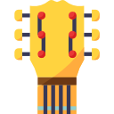

Amatrice, avec un appareil médiocre, prends tout de même de belles photos. Achat depuis peu d'un polaroid d'antant qui date de 1970 !
Tous les styles, du classique au RAP, avec une préférence pour le HIP-HOP.
 Apprend à jouer, ça vient doucement mais surement !
Adoratrice du piano depuis toute petite, j'ai toujours voulu savoir en jouer, malheureusement c'est comme la guitare, ça vient doucement mais surement !
 En salle : vélo ellyptique assis et debout, tapis, wave, rameur, musculation pour le dos.
En salle : vélo ellyptique assis et debout, tapis, wave, rameur, musculation pour le dos.
FPS et TPS principalement comme Wolfenstein et Sniper Elite, sinon du jeu d’action-aventure.
 Tous les genres avec une préférences pour l’horreur et le drame-comique.
Tous les genres avec une préférences pour l’horreur et le drame-comique.
Visite d’une partie de la France, voyage en Allemagne, Italie et Espagne.
Passionnée par la patisserie, j'aime faire plaisir en faisant toute sorte de gâteaux à mes heures perdues !
Passionnée par les chats, je suis l'heureuse maman de 2 petits chatons de 1 an et 5 mois, Tichat et Choupette !